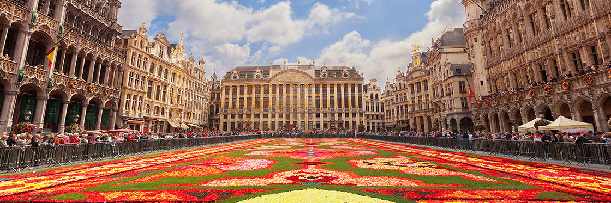
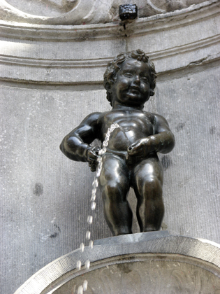

Magnifique, ancienne, élégante, belle, agréable, galante, grandiose… Visiter Bruxelles se fait forcément aux côtés d’une longue liste de superlatifs.
Et encore, aucun ne suffit à décrire Bruxelles et sa splendeur.

Le Manneken-Pis
visite de la gare centrale au Manneken Pis3 heures.
Il est difficile de ne pas admettre que la plupart des regards des voyageurs sont tournés vers Manneken Pis, que l’on traduit du bruxellois par « le gamin qui pisse ».
Il est à la fois un monument humoristique et historique. Cette fontaine, dans sa forme actuelle, a été érigée en 1619 et depuis ce temps, la tradition d’habiller le « gamin » a été maintenue par la communauté locale.
Ainsi, à dates fixes, la statue sera vêtue différemment. Les 883 costumes de la garde robe du petit sont exposés au Musée de la ville de Bruxelles.
Il existe une version féminine du Manneken-pis, la Jeanneke Pis, située dans l’impasse de la Fidélité tout près de la Rue des Bouchers. Découvrez ces deux statues ainsi qu’une troisième, encore moins connue.

Les Musées
Les musées royaux des Beaux-Arts de Belgique sont pour tous les fans de visites historiques. Ils sont constitués par le Musée d’Art Ancien, le Musée d’Art Moderne, le Musée Antoine Wiertz, et le Musée Constantin-Meunier.
Récemment, le musée a mis à disposition une Salle du Trésor avec toutes les pièces les plus célèbres.
Les Musées de la bière. La bière est une marque culturelle de la Belgique. De nombreuses brasseries et musées de la bière sont situés à travers le pays, et Bruxelles n’est pas une exception.
Le Musée bruxellois de la Gueuze, par exemple, présente une grande exposition montrant diverses bières et recettes anciennes. Vous pourrez même tester quelques breuvages.